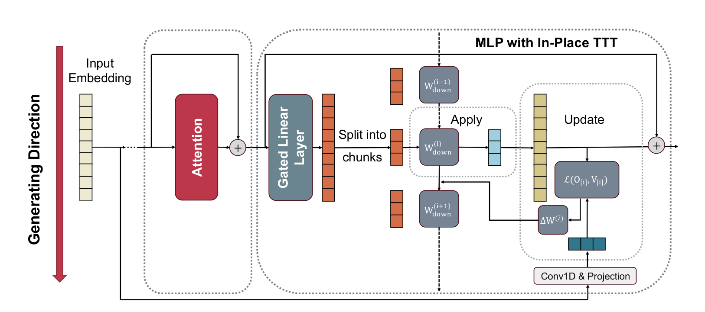
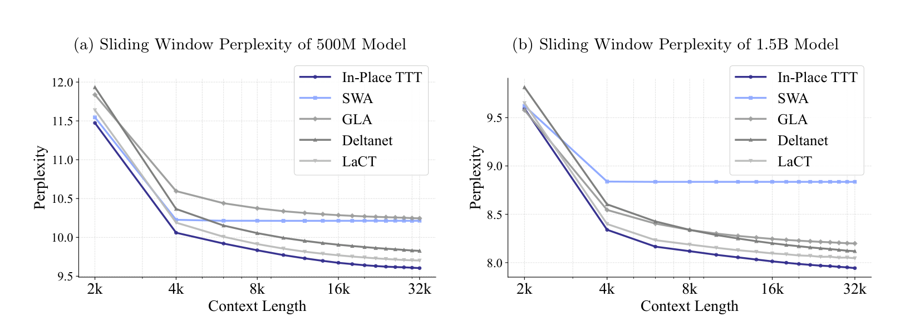
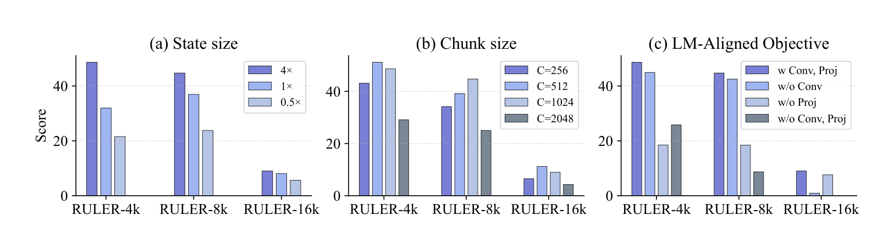
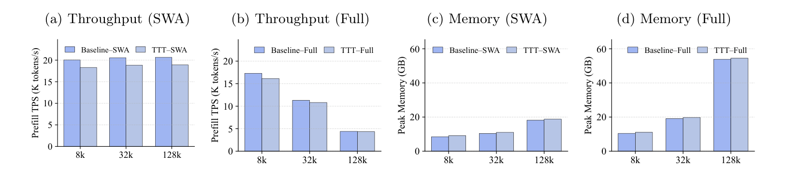

TTT 速览：测试时训练的核心套路
如果你还不熟悉 Test-Time Training（TTT），这一章用最短的篇幅讲清它的套路。如果你已经懂了，可以直接跳到第 2 章。
一句话概括
TTT = 模型在推理时，用输入本身做自监督学习，更新一小部分参数（fast weights），把上下文信息压缩进参数。
两个核心操作：Update 和 Apply
所有 TTT 方法都遵循同一个"两操作"套路：
- Apply（应用）：用当前的 fast weights 处理输入，得到输出；
- Update（更新）：用输入构造的 key-value 对，通过一步梯度下降更新 fast weights。
这两个操作交替进行：先 Apply 得到输出，再 Update 把当前输入的信息写进参数，下一个 token 来时用更新后的参数 Apply。
Fast weights = 测试时可动态更新的一小部分参数
标准权重（slow weights）：预训练学到的通用知识，推理时冻结。
Fast weights：测试时通过梯度下降动态更新的参数，用来存储当前输入的上下文信息。
两者的关系就像"硬盘"和"内存"：硬盘存长期通用知识，内存存当前正在处理的内容。TTT 的 fast weights 就是模型的"内存"。
TTT 与注意力的本质区别
注意力机制把上下文存在 KV cache 里——这是一个随上下文长度线性增长的外部存储。TTT 把上下文压缩进 参数 里——这是一个常数大小的内部存储。
这就是为什么 TTT 能做到常数推理延迟：不管上下文多长，参数的维度不变。
有了这个基础，我们来看这篇论文要解决什么问题。
TTT 进入 LLM 主流生态的三大障碍
论文开篇就指出：尽管 TTT 在长上下文建模上展现了潜力，但它至今没有被 LLM 主流生态广泛采用。原因有三个：
障碍 1：架构不兼容
之前的 TTT 方法（如 TTT-KVB、E2E TTT）需要引入新的层或修改注意力机制。这意味着不能直接用在已有的预训练模型上——必须从头预训练一个新模型。对于已经投入巨额成本训练好的 LLM 来说，这是不可接受的。
障碍 2：计算低效
之前的 TTT 方法通常是逐 token 更新（per-token update），因为它们替换了注意力层，必须保持因果性。逐 token 更新无法并行，在现代 GPU/TPU 上效率很低。E2E TTT 用了小批量来缓解，但仍然需要反向传播。
障碍 3：目标不对齐
之前的 TTT 方法用的是通用重建目标（reconstruction target）：让 fast weights 重建当前 token 的表示。但 LLM 的最终目标是 next-token prediction（NTP）。重建目标和 NTP 不对齐——模型在测试时学到的东西不一定直接帮助预测下一个 token。
这篇论文的定位：不是又一个 TTT 变体，而是 TTT 的"工程化落地"
E2E TTT 证明了 TTT 在长上下文上的有效性，但它需要改架构、从头预训练。In-Place TTT 的目标是让 TTT 能直接用在已有的预训练 LLM 上——零架构改动、零从头预训练、高效并行、目标对齐。这是从"研究原型"到"工程可用"的关键一步。
核心洞察：MLP 的 $W_{down}$ 本身就是天然的 fast weights
论文最关键的洞察是：不需要引入新的 fast weight 层——Transformer MLP block 的最终投影矩阵 $W_{down}$ 本身就可以当作 fast weights。
回顾 MLP block 的结构
标准 Transformer 的 MLP block 通常是这样的：
标准 MLP block（以 Gated MLP 为例）
$$h = \sigma(x W_{up}) \odot (x W_{gate})$$$$y = h W_{down}$$$x$ 是输入（维度 $d_{model}$），$W_{up}$ 和 $W_{gate}$ 是上投影矩阵（$d_{model} \to d_{ff}$），$\sigma$ 是激活函数（如 SiLU），$\odot$ 是逐元素乘法，$W_{down}$ 是下投影矩阵（$d_{ff} \to d_{model}$），$y$ 是输出。
注意 $W_{down}$ 的作用：它把中间激活 $h$（维度 $d_{ff}$）投影回模型维度 $d_{model}$。换句话说，$W_{down}$ 决定了"中间激活中的哪些信息被传递到输出"。
为什么 $W_{down}$ 适合做 fast weights？
论文给出了几个理由：
- 它已经存在：不需要引入新参数，不需要改架构；
- 它是线性的：$y = h W_{down}$ 是纯线性变换，对 $W_{down}$ 做梯度下降非常简单——不需要通过非线性层反向传播；
- 它控制信息流：修改 $W_{down}$ 就等于修改"哪些中间特征被放大/抑制"，这正是 TTT 想要的——根据上下文动态调整信息传递；
- 它不替换注意力：因为只改 MLP 的 $W_{down}$，注意力层完全不动。这意味着可以用大 chunk 并行更新（不需要逐 token 保持因果性）。
"In-Place"的含义：在原位置更新，不引入新层
论文标题中的"In-Place"有两层含义：① 不引入新的 fast weight 层，直接在已有的 $W_{down}$ 上更新；② 不需要从头预训练，直接在已有的预训练模型上做 drop-in 替换。这和"in-place algorithm"（原地算法，不需要额外空间）的精神一致——TTT 不需要额外的参数空间。
In-Place TTT 的具体机制：Chunk-wise Apply-Update

分块处理
因为 In-Place TTT 不替换注意力层，它不受"逐 token 更新"的约束。论文把输入序列分成大小为 $C$ 的 chunk（实验中 $C=512$ 或 $1024$），每个 chunk 做一次 Apply + Update。
设第 $i$ 个 chunk 的中间激活为 $Z_{[i]} \in \mathbb{R}^{C \times d_{ff}}$（$C$ 个 token，每个 token 的中间激活维度是 $d_{ff}$），当前 fast weights 为 $W_{down}^{(i)} \in \mathbb{R}^{d_{ff} \times d_{model}}$。
操作 1：Apply
Apply：用当前 fast weights 处理 chunk
$$O_{[i]} = Z_{[i]} (W_{down}^{(i)})^\top$$$O_{[i]}$ 是第 $i$ 个 chunk 的输出（$C \times d_{model}$）。注意这就是标准 MLP 的最后一步——$W_{down}$ 把中间激活投影回模型维度。唯一的区别是 $W_{down}$ 现在是动态的，每个 chunk 可能不同。
操作 2：Update
Update 用 $Z_{[i]}$ 作为 key，用一个目标值 $\hat{V}_{[i]}$ 作为 value，通过一步梯度下降更新 $W_{down}$：
Update：一步梯度下降更新 fast weights
$$W_{down}^{(i+1)} = W_{down}^{(i)} - \eta \nabla_{W_{down}} \mathcal{L}\big(Z_{[i]}(W_{down}^{(i)})^\top,\; \hat{V}_{[i]}\big)$$$\eta$ 是学习率，$\mathcal{L}$ 是损失函数（下一章详细讲），$\hat{V}_{[i]}$ 是目标值（value target）。注意这里的梯度只对 $W_{down}$ 求，不需要通过 $W_{up}$、$W_{gate}$ 或注意力层反向传播——计算非常轻量。
为什么可以用大 chunk？
之前的 TTT 方法（替换注意力层的）必须逐 token 更新，因为注意力本身是逐 token 因果的。但 In-Place TTT 只改 MLP 的 $W_{down}$，注意力层完全正常工作——chunk 内的 token 之间通过注意力交互，chunk 之间通过 $W_{down}$ 的更新传递信息。因此可以用大 chunk（512-1024），充分利用 GPU 并行性。
逐 token 更新（prior work）
每个 token 做一次梯度下降。无法并行，GPU 利用率低。chunk 大小 = 1。
Chunk-wise 更新（本文）
每 512-1024 个 token 做一次梯度下降。chunk 内并行，GPU 利用率高。计算量减少 512-1024 倍。
LM-Aligned 目标：让 TTT 学的东西直接帮助预测下一个 token
上一章的 Update 操作中有一个关键组件：目标值 $\hat{V}_{[i]}$。这个目标值决定了 TTT 从输入中学到什么。这一章讲论文的第二个核心贡献：LM-Aligned 目标。
之前的做法：重建目标
之前的 TTT 方法用的是重建目标（reconstruction target）：让 fast weights 重建当前 token 的表示。具体来说，value $V$ 就是当前 token 的 embedding $E_{x_t}$。损失是让 Apply 的输出 $O$ 接近 $V$。
这意味着 TTT 在学"如何重建当前 token"——但这和 LLM 的最终目标"预测下一个 token"不是一回事。
论文的做法：LM-Aligned 目标
论文的核心想法是：既然 LLM 的目标是预测下一个 token，那 TTT 的目标也应该是"帮助预测下一个 token"。具体来说，value target 应该包含未来 token 的信息，而不是当前 token 的信息。
LM-Aligned target 的构造
$$\hat{V} = \mathrm{Conv1D}(X_0) W_{target}$$$X_0 \in \mathbb{R}^{n \times d_{model}}$ 是 token embedding 序列，$\mathrm{Conv1D}(\cdot)$ 是 1D 卷积（核大小可控，决定"看多少个未来 token"），$W_{target} \in \mathbb{R}^{d_{model} \times d_{model}}$ 是可训练的投影矩阵。$\hat{V}$ 就是包含未来 token 信息的 value target。
为什么用 Conv1D？
Conv1D 的作用是把"当前 token 及其附近的未来 token"的 embedding 混合起来。通过设置卷积核的大小，可以控制"看多少个未来 token"：
- 核大小 = 1，权重只取下一个 token = 纯 next-token target；
- 核大小 = k，权重取接下来 k 个 token 的加权组合 = 多 token target。
论文指出，这和最近 Multi-Token Prediction（MTP）的思想一致——预测多个未来 token 比只预测一个能提供更丰富的学习信号。
损失函数
有了 $\hat{V}$，论文用最简单的相似度损失：
损失函数：负内积
$$\mathcal{L}(O, \hat{V}) = -\langle O, \hat{V} \rangle_F$$$\langle \cdot, \cdot \rangle_F$ 是 Frobenius 内积（对应元素相乘再求和）。最小化这个损失等于最大化 Apply 输出 $O$ 和目标 $\hat{V}$ 的相似度。
用这个损失，Update 的梯度可以直接解析求出：
式 (1)：更新规则的解析形式
$$W_{down}^{(i)} = W_{down}^{(i-1)} + \eta\; \hat{V}_{[i]}^\top Z_{[i]}$$注意这是一个纯外积累加：$\hat{V}_{[i]}^\top Z_{[i]}$ 是一个 $d_{model} \times d_{ff}$ 的矩阵（$\hat{V}$ 是 $C \times d_{model}$，$Z$ 是 $C \times d_{ff}$）。不需要任何反向传播——直接计算外积然后累加。这就是 In-Place TTT 高效的根本原因。
外积累加 = 最简单的联想记忆
$W_{down}^{(i)} = W_{down}^{(i-1)} + \eta \hat{V}^\top Z$ 这个更新规则本质上是一个联想记忆（associative memory）：把 key $Z$ 和 value $\hat{V}$ 绑定在一起存进矩阵。之后当类似的 key 出现时，矩阵会"回忆"出对应的 value。这和 Hopfield 网络、现代线性注意力（linear attention）的更新规则完全同构——In-Place TTT 实际上是把 MLP 的 $W_{down}$ 变成了一个线性联想记忆。
理论证明：为什么 LM-Aligned 目标比重建目标好？
论文不只是"觉得"LM-Aligned 目标更好，还给出了一个正式的理论证明。这一章用通俗的语言解释这个证明。
证明的设定：Induction Head
证明在induction head的经典设定下进行。Induction head 是 Transformer 中 in-context learning 的核心机制：如果序列中出现过 $(k^*, v^*)$ 这个 key-value 对，之后当 $k^*$ 再次出现时，模型应该能预测出 $v^*$。
具体设定：
- 在位置 $t^*$，出现 key-value 对 $(x_{t^*}, x_{t^*+1}) = (k^*, v^*)$；
- 在之后的位置 $n > t^*$，key $k^*$ 再次出现：$x_n = k^*$；
- 模型需要正确预测 $x_{n+1} = v^*$。
两个假设
证明基于两个标准假设：
- Embedding 近似正交：不同 token 的 embedding 几乎正交（内积很小），且每个 embedding 有非零的模长。这是 Transformer 理论分析中的标准假设。
- Key-Query 对齐：query 位置 $n$ 的中间激活 $Z_n$ 与对应 key 位置 $t^*$ 的中间激活 $Z_{t^*}$ 是对齐的（内积为正），与其他不相关位置的激活不对齐（期望内积为 0）。
比较两种目标
在这个设定下，论文比较了 TTT 用两种不同目标时，对 query 位置 $n$ 的输出 logit 的影响：
- 重建目标：$V_t^{rec} = E_{x_t}$（当前 token 的 embedding）；
- LM-Aligned 目标：$V_t^{LM} = E_{x_{t+1}}$（下一个 token 的 embedding）。
LM-Aligned Target vs Reconstruction Target 的 Logit 效应
在上述设定和假设下，经过一步 TTT 更新后：
LM-Aligned 目标：
正确 token 的 logit 增加：$\mathbb{E}[\Delta \ell_n[v^*]] \geq \lambda_{lr} \cdot c_{norm}^2 \cdot c_{align} > 0$
其他 token 的 logit 几乎不变：$|\mathbb{E}[\Delta \ell_n[w]]| \leq \lambda_{lr} \cdot \epsilon \cdot c_{align}$（$\epsilon$ 很小）
重建目标：
正确 token 的 logit 变化可忽略：$|\mathbb{E}[\Delta \ell_n[v^*]]| \leq \lambda_{lr} \cdot \epsilon \cdot c_{align}$
这个定理说了什么？
用最通俗的话说：
- LM-Aligned 目标：TTT 更新后，正确答案 $v^*$ 的 logit 显著增加，其他答案的 logit 几乎不变——模型更可能预测出正确答案。
- 重建目标：TTT 更新后，正确答案 $v^*$ 的 logit 几乎没有变化——模型学了等于白学。
为什么重建目标没用？因为它学的是"当前 token 是什么"，而不是"下一个 token 是什么"
在 induction head 设定中，关键信息是"$k^*$ 后面跟着 $v^*$"。重建目标让 fast weights 记住"$k^*$ 是 $k^*$"（当前 token 的重建），这对预测"$k^*$ 后面是什么"没有帮助。LM-Aligned 目标让 fast weights 记住"$k^*$ 后面是 $v^*$"（下一个 token 的信息），这直接帮助预测。这就是定理的直觉——目标必须和最终任务对齐，否则学的东西用不上。
实现细节：上下文并行与因果性保证
上下文并行（Context Parallelism）
In-Place TTT 的更新规则（式 1）是一个外积累加，具有结合律（associative）。这意味着它可以用并行扫描（parallel scan）算法来实现上下文并行：
- 并行计算：所有 chunk 的中间激活 $Z_{[i]}$ 和更新量 $\Delta W_{[i]} = \hat{V}_{[i]}^\top Z_{[i]}$ 同时计算；
- 前缀和：对 $[\Delta W_{[1]}, \Delta W_{[2]}, \ldots]$ 做一次前缀和（prefix sum），得到每个 chunk 的累积更新 $\Delta S_i = \sum_{j=1}^{i-1} \Delta W_{[j]}$；
- 并行输出：每个 chunk 的有效 fast weights $W_{down}^{(i-1)} = W_{down}^{(0)} + \eta \Delta S_i$ 和输出 $O_{[i]} = Z_{[i]}(W_{down}^{(i-1)})^\top$ 同时计算。
这使得 In-Place TTT 完全兼容现代 LLM 的上下文并行训练框架。
因果性保证
并行扫描的一个风险是"信息泄露"——chunk $i$ 的更新不能包含 chunk $i$ 之后的信息。论文通过两个设计保证因果性：
- 因果卷积：生成 $\hat{V}$ 时，Conv1D 使用因果填充（causal padding），确保每个位置的 $\hat{V}$ 只包含当前及之前的 token 信息；
- 前缀和的方向：$\Delta S_i = \sum_{j=1}^{i-1} \Delta W_{[j]}$ 只累加 chunk $i$ 之前的更新，不包含 chunk $i$ 自身及之后的更新。
文档边界处理
在文档边界（一个文档结束、下一个文档开始），fast weights 被重置为预训练状态 $W_{down}^{(0)}$，防止不同文档之间的上下文泄露。
In-Place TTT 与线性注意力的深层联系
式 (1) 的更新规则 $W_{down}^{(i)} = W_{down}^{(i-1)} + \eta \hat{V}^\top Z$ 和线性注意力（linear attention）的状态更新规则完全同构。线性注意力用 $K^\top V$ 作为记忆状态，In-Place TTT 用 $Z^\top \hat{V}$ 作为 $W_{down}$ 的更新量。区别在于：线性注意力的状态是外部的（随序列增长），In-Place TTT 的状态是参数本身（常数大小）。可以说 In-Place TTT 是把线性注意力的记忆"内化"进了 MLP 参数。
实验结果：Drop-in 增强与从头预训练均优于竞品
论文用 Qwen3-4B-Base 模型，在 128K 上下文上做实验，回答三个研究问题：
- Q1：In-Place TTT 能否以 drop-in 方式增强已预训练的 LLM？
- Q2：从头预训练时，In-Place TTT 与 prior TTT 方法相比如何？
- Q3：关键设计选择的效果是什么？
Q1：Drop-in 增强
在已预训练的 Qwen3-4B-Base 上，直接把 MLP block 替换为 In-Place TTT MLP（不需要重新预训练），在 RULER benchmark 上评估。结果显示 In-Place TTT 作为 drop-in 增强显著优于基线和竞品。

Q2：从头预训练
从头预训练时，In-Place TTT 也优于 prior TTT-related 方法。这验证了 In-Place TTT 不只是"能增强已有模型"，作为从头训练的架构也有竞争力。
关键指标
RULER benchmark 覆盖多种长上下文任务（needle-in-a-haystack、多文档问答等），在 4K 到 128K 的不同上下文长度上评估。In-Place TTT 在长上下文（64K、128K）上的提升尤为显著。
消融实验：验证每个设计选择

论文的消融实验验证了以下设计选择：
- LM-Aligned vs 重建目标：LM-Aligned 目标显著优于重建目标，验证了定理 1 的预测；
- Chunk 大小：大 chunk（512-1024）优于小 chunk，因为更好的 GPU 并行性；
- 更新哪些层：更新所有 MLP 的 $W_{down}$ 优于只更新部分层；
- 学习率：存在最优学习率范围，过大导致不稳定，过小导致更新不足。

批判评估与未来方向
只更新 $W_{down}$ 的表达能力有限
In-Place TTT 只更新 MLP 的最终投影矩阵 $W_{down}$，这是一个纯线性变换。相比之下，E2E TTT 更新整个 MLP 层（包括非线性）。只更新线性层的表达能力是否足够处理复杂的长上下文推理？论文的实验显示在 RULER 上有效，但在更复杂的推理任务（如长链数学证明、多步代码生成）上可能不够。
外积累加的记忆容量问题
更新规则是外积累加 $W_{down} \mathrel{+}= \eta \hat{V}^\top Z$。这本质上是一个秩-1 更新的累加。当上下文很长时，大量秩-1 更新叠加在一起，可能导致"记忆干扰"（memory interference）——新信息覆盖旧信息。论文没有分析 $W_{down}$ 的有效记忆容量（能存多少个独立的 key-value 对）。
理论证明只在 induction head 设定下
Theorem 1 的证明在简化的 induction head 设定下进行，假设了 embedding 近似正交和 key-query 对齐。在真实的 LLM 中，这些假设可能不完全成立。定理的结论在多大程度上能推广到真实场景？论文用实验验证了，但理论和实验之间仍有差距。
Drop-in 替换需要微调吗？
论文说 In-Place TTT 是 drop-in 替换，不需要重新预训练。但直接替换后，$W_{down}$ 的初始值是预训练值，而 TTT 的学习率 $\eta$ 和 chunk 大小 $C$ 是新的超参数。这些超参数是否需要在目标数据上微调？论文没有详细讨论 drop-in 后的超参数选择过程。
开放问题
- 更新更多参数：能否在保持高效的同时，更新 $W_{up}$ 和 $W_{gate}$？这会增加表达能力，但也会增加计算量。
- 自适应学习率：目前 $\eta$ 是固定的。能否根据输入内容自适应调整学习率（重要信息多学，噪声少学）？
- 与 E2E TTT 的结合：In-Place TTT 高效但表达能力有限，E2E TTT 表达能力强但计算贵。能否结合两者——用 In-Place TTT 做高效的基础更新，用 E2E TTT 做关键位置的深度更新？
- 多模态扩展：In-Place TTT 的 $W_{down}$ 更新机制是通用的，能否扩展到视觉编码器（ViT）或多模态模型中？